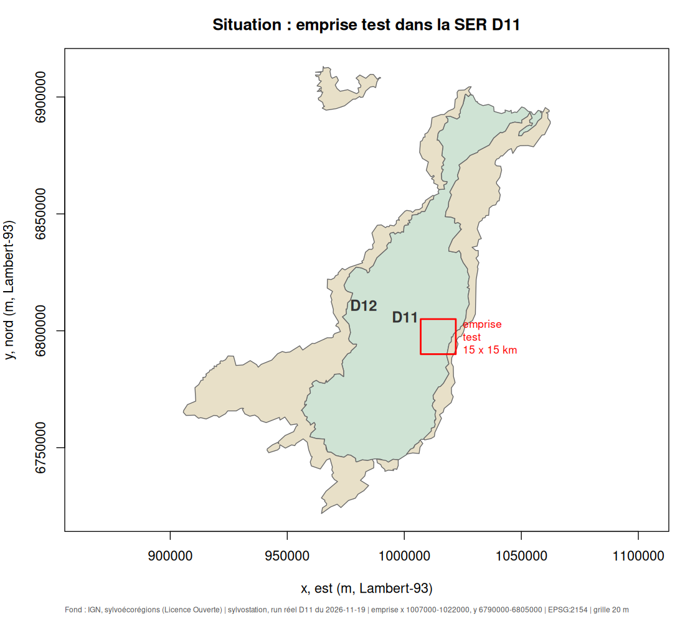
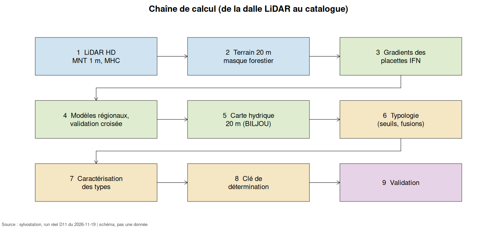
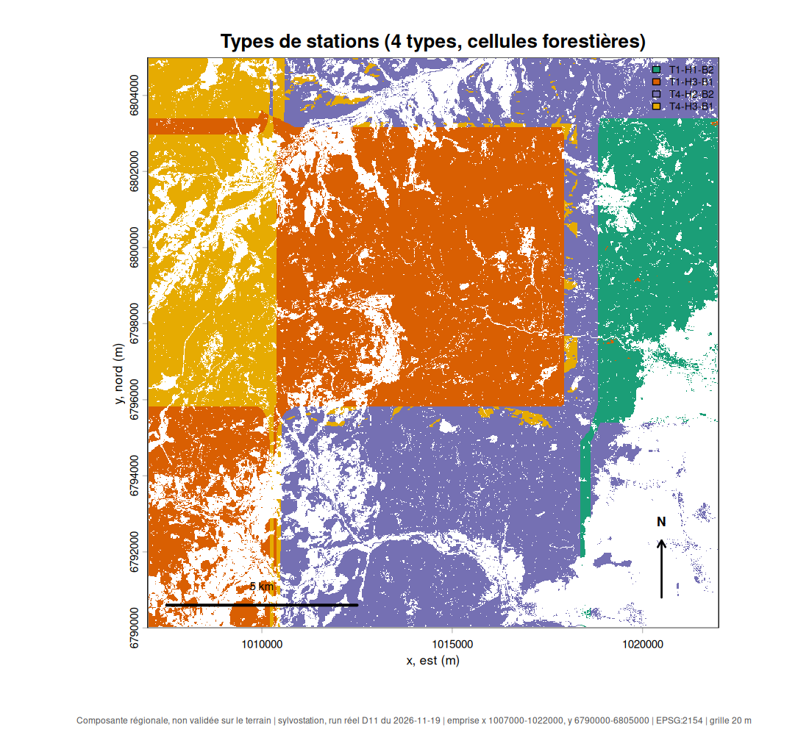
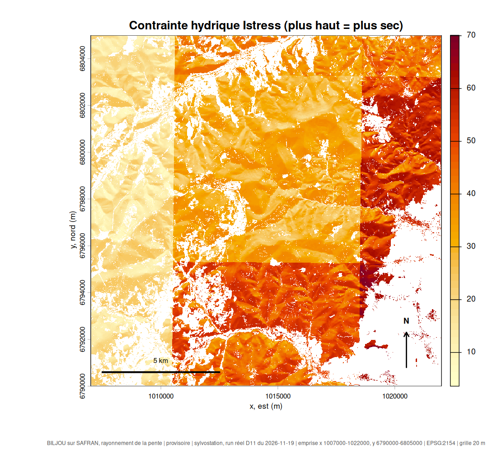
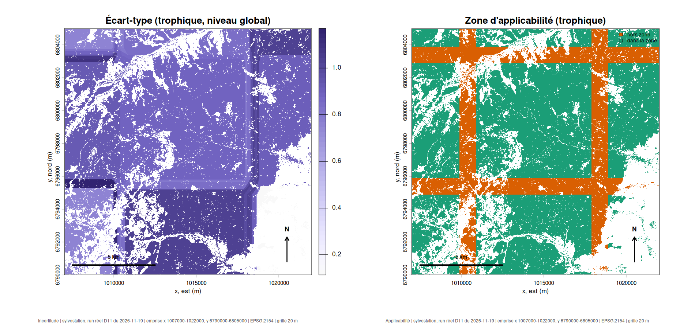

Résultats sur le massif test vosgien (D11)
Source:vignettes/articles/resultats-vosges-d11.Rmd
resultats-vosges-d11.RmdPremière carte, à composante régionale, non validée sur le
terrain. Ce qui suit est le résultat d’un run
réel du pipeline (demo: false, aucune donnée
fabriquée) du 2026-11-19 (date saisie à la main à partir du journal du
run : les sorties n’en consignent pas), sur une emprise de 15 km x 15 km
de la sylvoécorégion D11 (Massif vosgien central). Aucune des cibles de
qualité du brief n’est atteinte : lisez d’abord la section « Limites ».
Cette carte ne doit pas servir à décider sur le terrain.
Limites
Les chiffres du run, tels quels :
| Mesure | Obtenu | Cible ou repère |
|---|---|---|
| Types de stations | 4 |
|
| Surface forestière typée | 15 762 ha (394 055 cellules de 20 m) |
|
| Clé de détermination : bon classement | 59,9 % ajusté ; 43,7 % en validation croisée | 70,0 % : non atteinte |
| Gradient trophique : R² en validation croisée spatiale | -0,0003 | 0,36 : non atteint |
| Gradient hydrique : R² du modèle régional en validation croisée spatiale (il ne mesure pas la carte Istress affichée) | 0,30 | 0,43 : non atteint |
| Ancrages locaux (GBIF) | 5 mailles de bioindication seulement |
|
| Sols | non exécutés (aucune couche fournie) |
|
| Validation sur relevés GNSS indépendants | non fournis : critère non atteint |
|
| Comparaison à la référence AgroParisTech | non fournie : étape sautée |
|
À lire avec ces chiffres :
- La carte reproduit pour l’essentiel les 9 mailles climatiques. Les prédicteurs sont à maille large (climat SAFRAN de 8 km, réserve utile uniforme par maille). Mesuré sur les sorties du run : la maille SAFRAN explique 84,4 % de la variance de l’Istress topographique et 77,8 % du gradient trophique ; 89,6 % des cellules typées sont dans le type modal de leur maille ; entre cellules voisines, le type change 0,8 % du temps à l’intérieur d’une maille, contre 12,1 % à 18,2 % à une limite de maille. Les limites rectilignes des cartes sont celles de la grille du climat, pas celles du terrain. À l’échelle de la station, la carte ne dit presque rien de plus que le climat régional ; la composante locale (LiDAR, topographie) n’a que 5 ancrages GBIF pour s’appuyer.
-
Le trophique n’est pas prédit. Un R² de l’ordre de
zéro (-0,0003) veut dire que le modèle régional ne fait pas mieux que la
moyenne. La part « trophique » des types (
T1ouT4) ne repose donc sur aucune prédiction vérifiée. - Le modèle régional hydrique explique 30,2 % de la variance des placettes en validation croisée, contre un repère de 0,43 ; ce R² ne mesure pas la carte Istress affichée, qui est un indice calculé et n’a pas de validation propre.
- Les placettes IFN sont localisées à 700 m près : aucune variable fine (LiDAR, pente, TWI…) n’est extraite à leurs coordonnées (règle bloquante du projet). Le LiDAR et le terrain n’entrent donc dans aucun modèle régional : ils servent à la carte hydrique (pente) et au seul modèle local trophique, ajusté sur les 5 ancrages GBIF.
- Seuils et fusions provisoires : les types sont définis par quantiles, les types rares sont fusionnés, le recodage de la géologie est provisoire.
- Masque forestier provisoire : cellule de 20 m forestière si la moitié de ses pixels de hauteur de canopée dépasse 5 m ; la BD Forêt n’est pas branchée.
- Aucun relevé terrain indépendant ne confirme ni n’infirme la carte.
Emprise
L’emprise test est un carré de 15 km de côté (x de 1 007 000 à 1 022 000, y de 6 790 000 à 6 805 000, Lambert-93 EPSG:2154, x = est, y = nord), au bord est de la SER. Le run a traité les 225 dalles LiDAR HD qui la recouvrent. Environ 10,0 % de l’emprise (carré de 15 km) et 1,3 % de la forêt typée tombent hors de la SER D11 : la carte y est tout de même calculée.

Données d’entrée
Toutes les données sont ouvertes ; aucune donnée d’AgroParisTech n’entre dans ce dépôt ni dans ce site.
| Source | Volume dans ce run | Licence |
|---|---|---|
| LiDAR HD (IGN) | 225 dalles (MNT et MHC à 1 m, mosaïque à 5 m) | Licence Ouverte 2.0 |
| Placettes IFN (IGN) | 9 392 placettes de la GRECO D, localisées à 700 m | Licence Ouverte 2.0 (citation imposée) |
| Climat SAFRAN SIM2 (Météo-France) | 9 mailles de 8 km, années 1996-2025 | Licence Ouverte 2.0, « Source : Météo-France » |
| BD Charm-50 (BRGM) | formations des départements 67, 68 et 88 | aucune licence nommée ; métadonnées « Aucune condition ne s’applique » |
| BD TOPAGE (Sandre/OFB) | 343 tronçons | Licence Ouverte (millésime 2025 : à vérifier) |
| TAXREF v18 (MNHN) | version 18, jointures CD_NOM puis CD_REF | Licence Ouverte 2.0 ou fr-lo selon la fiche (écart signalé) |
| Valeurs indicatrices (Tichý et al. 2023) | appariées sur TAXREF (non appariés listés dans le rapport) | CC BY 4.0, DOI 10.5281/zenodo.7427088 |
| Sylvoécorégions (IGN) | SER D11 et D12 | réutilisation libre (IGN) |
| GBIF | 5 mailles de bioindication | propre à chaque jeu : CC BY 4.0 ou CC BY-NC 4.0 (aucun extrait publié ici) ; DOI à vérifier |
| Sols | aucune couche |
|
| Relevés GNSS | aucun fichier |
|
Citations dues.
- IGN, Inventaire forestier national français, Données brutes, Campagnes annuelles 2005 et suivantes, https://inventaire-forestier.ign.fr/dataIFN/, site consulté le 16/11/2026 (Licence Ouverte Etalab 2.0). Ces données ne servent pas ici à produire des statistiques d’inventaire.
- Météo-France, SAFRAN (SIM2 quotidien) : « Source : Météo-France ».
- GBIF.org, occurrences de plantes vasculaires (Tracheophyta) de
l’emprise test, consultées en novembre 2026. L’emprise compte 30 jeux de
données, dont 26 sous CC BY 4.0 et 4 sous CC BY-NC 4.0 (liste, titres et
licences :
docs/referentiels.md, § 8). Les jeux exactement utilisés par le run ne sont pas consignés dans les sorties ; le DOI de citation est à vérifier (il n’existe que pour un téléchargement avec compte, pas pour une recherche directe). - La carte et les chiffres de cette page dérivent en partie d’occurrences GBIF, dont certaines sous CC BY-NC. Seuls des chiffres et des cartes dérivés et agrégés sont publiés ; aucune occurrence, aucune coordonnée de point n’est publiée.
Les ressources, versions et adresses détaillées sont dans le rapport
du run et dans docs/referentiels.md du dépôt. La licence du
millésime 2025 de la BD TOPAGE et le DOI des occurrences GBIF (il
n’existe que pour un téléchargement, pas pour une recherche directe)
restent à vérifier ; le mode d’appel GBIF du run n’est
pas consigné dans les sorties.
Chaîne de calcul

- LiDAR HD : modèle numérique de terrain et hauteur de canopée à 1 m, mosaïque à 5 m.
- Terrain à 20 m et masque forestier ; MRVBF et réseau BD TOPAGE calculés mais non utilisés par les modèles régionaux (règle des 700 m).
- Gradients des placettes IFN : trophique (valeurs indicatrices de Tichý et al., TAXREF v18), hydrique (BILJOU sur SAFRAN, 1996-2025), bioclimatique (axe de P - ETP d’avril à septembre et de la température).
- Modèles régionaux sur prédicteurs à maille large, validation croisée spatiale par blocs, incertitude et zone d’applicabilité.
-
Carte hydrique de 20 m : indice Istress de BILJOU,
avec l’évapotranspiration modulée par le rayonnement reçu par la pente
(
r.sun, ciel clair). Réserve utile uniforme par maille SAFRAN (médiane des placettes de la maille), provisoire. - Typologie : seuils provisoires par quantiles, fusion des types rares.
- Caractérisation des types (flore, arbres, fertilité) et clé de détermination terrain (arbre CART sur les observables de l’IFN).
- Validation statistique ; la validation thématique par relevés GNSS n’a pas eu lieu.
Résultats
Les types de stations
Le run donne 4 types sur 15 762 ha
de forêt. Leur code combine un niveau trophique (T),
hydrique (H) et bioclimatique (B).

| Type | Surface (ha) | Part de la forêt | Placettes IFN | Trophique | Hydrique | Bioclimat |
|---|---|---|---|---|---|---|
| T1-H1-B2 | 1 915 | 12,1 % | 27 | 4,44 | -53,5 | 2,45 |
| T1-H3-B1 | 5 927 | 37,6 % | 44 | 4,54 | -28,4 | -0,88 |
| T4-H2-B2 | 5 421 | 34,4 % | 41 | 4,98 | -44,4 | 1,20 |
| T4-H3-B1 | 2 499 | 15,9 % | 55 | 4,78 | -17,3 | -0,83 |
Les valeurs de gradient sont celles de types.csv (unités
propres à chaque gradient). Voir « Limites » : les contours rectilignes
viennent de la maille climatique.
La contrainte hydrique à 20 m

L’indice Istress est calculé cellule par cellule : plus il est élevé, plus la contrainte hydrique est forte. Il module l’évapotranspiration par le rayonnement de la pente. Les sauts francs entre rectangles viennent du climat (précipitations et rayonnement SAFRAN) et de la réserve utile (de 49 à 114 mm), tous deux uniformes par maille SAFRAN (9 mailles) : ils ne correspondent à aucune limite du terrain. Limites propres à cette carte (adaptation non validée de Dyer 2009) : rayonnement de ciel clair appliqué au rayonnement nuageux (contraste d’exposition surestimé), apports latéraux et engorgement non captés, aucune validation française à cette résolution.
L’incertitude

Écart-type de prédiction (recalé sur l’erreur de validation croisée : un niveau d’erreur global, pas une erreur locale) et zone d’applicabilité du modèle trophique. Hors zone (26,4 % de la forêt typée), la prédiction n’est pas à interpréter. Ces couches ne décrivent que le modèle trophique régional ; la carte hydrique n’a pas d’incertitude propre.
État de preuve
Pour chaque étape : ce qui a été réellement exécuté dans ce run. Le texte de détail est abrégé ici ; il est complet dans le rapport.
| Étape | État | Dans ce run | Détail |
|---|---|---|---|
|
réel | oui | SER D11 ; grille de 20 m sur les dalles traitées. |
|
réel | oui | 225 dalle(s) LiDAR HD traitée(s) ; MNT et MHC à 1 m, mosaïque à 5 m. |
|
réel | oui | MRVBF calculé ; réseau BD TOPAGE : 343 tronçon(s). Non utilisés par les modèles régionaux (règle des 700 m). |
|
réel | oui | Formations ; recodage lithologique provisoire, non validé. |
|
réel | oui | 9392 placettes de la GRECO D, localisées à 700 m. |
|
réel | oui | Trophique : valeurs indicatrices de Tichý et al. 2023 (TAXREF v18) ; hydrique : BILJOU sur SAFRAN (méthode biljou, années 1996-2025) ; bioclimat : axe 1 de P - ETP (avril […] |
| 6 bis. Carte hydrique (BILJOU, rayonnement de la pente) | réel | oui | Istress de 20 m = BILJOU(ETP, P et RU de la maille SAFRAN) ; méthode biljou_topo (ETP de Penman (biljouR) sur le rayonnement SAFRAN (SSI, J/cm2) multiplié par k (r.sun, c […] |
|
réel | oui | 5 maille(s) de bioindication. |
|
non exécuté | non | Aucune couche de sols fournie (clé soil_paths absente) ; GlobalSoilMap introuvable (référentiels § 18). |
|
réel | oui | Cellule de 20 m forestière si au moins la moitié de ses pixels du MHC dépasse 5 m (seuil provisoire) ; BD Forêt non branchée. 394055 cellule(s) forestière(s). |
|
réel | oui | Composante régionale seulement : placettes IFN et prédicteurs à maille large (climat SAFRAN). Hydrique : la carte est l’indice Istress de 20 m calculé (ligne 6 bis) ; le […] |
|
réel | oui | 4 type(s) ; seuils provisoires par quantiles ; aucun type azonal reconnu (azonal = FALSE). |
|
réel | oui | Flore et arbres des placettes IFN de la GRECO. |
|
réel | oui | Observables notés par l’IFN (pente, position, humus). |
|
réel | oui | R² et RMSE par blocs des modèles régionaux (trophique, hydrique) ; bioclimat calculé, non modélisé. |
|
non atteint (entrée absente) | non | Aucun relevé GNSS fourni (clé gnss_path absente) : critère non atteint, rien n’est substitué. |
|
sautée (entrée absente) | non | Rasters de la référence non fournis (clé reference_path absente) : étape sautée. |
|
réel | oui | Fichiers sans préfixe synth_ (aucun jeu fabriqué). |
La clé de détermination terrain atteint 59,9 % de bon classement sur les données qui l’ont construite et 43,7 % en validation croisée, pour une cible de 70,0 % : non atteinte, la clé n’est pas utilisable en l’état.
Comparaison avec CarHab
À venir. Une comparaison avec la cartographie nationale des habitats naturels CarHab est en cours (mission 031) ; cette section sera complétée avec ses résultats.
Reproduire et aller plus loin
- Le pipeline complet (
targets) et ses paramètres (config.yml) sont décrits dansdocs/pipeline.mddu dépôt ; le run réel exige le réseau, plusieurs gigaoctets de LiDAR et GRASS GIS pour le MRVBF. - Les figures de cette page sont produites par
inst/scripts/figures_article_vosges.Rdepuis les sorties du run (types.tif,hydrique.tif,incertitude.tif, tables CSV) ; l’article ne recalcule rien. - Le rapport complet du run (HTML et PDF,
rapport.qmd) est produit par la ciblerapportdu pipeline ; il n’est pas joint à la release du paquet. - Le tutoriel Massif test : du code SER au catalogue rejoue la chaîne en mode démonstration, sur données synthétiques.